EL MUNDO BAJO TUS PIES
La colonia de hormigas funciona como un equipo de desarrollo: cada una tiene su rol y juntas resuelven problemas complejos sin un líder central. Esta forma de organizarse inspiró la inteligencia de enjambre (Swarm Intelligence), una rama de la inteligencia artificial. Aquí exploramos su mundo y cómo la naturaleza inspira soluciones tecnológicas.
Empezar a explorar¿Qué son y cómo son?
Las hormigas son insectos pequeños y sociales de la familia Formicidae y del orden de los himenópteros, parientes de las abejas y las avispas. Viven en colonias y habitan en todo el mundo, excepto en las zonas polares.
Su cuerpo se divide en tres partes: cabeza, torso y abdomen, unidas por una cintura muy fina. Tienen dos antenas en forma de codo, completamente articuladas, que usan para reconocer su entorno y comunicarse. Poseen seis patas, y solo las reinas y los machos tienen alas, únicamente durante la época de reproducción.
Su tamaño varía según la especie (desde unos 2 mm), pero a pesar de ser pequeñas son extremadamente fuertes.
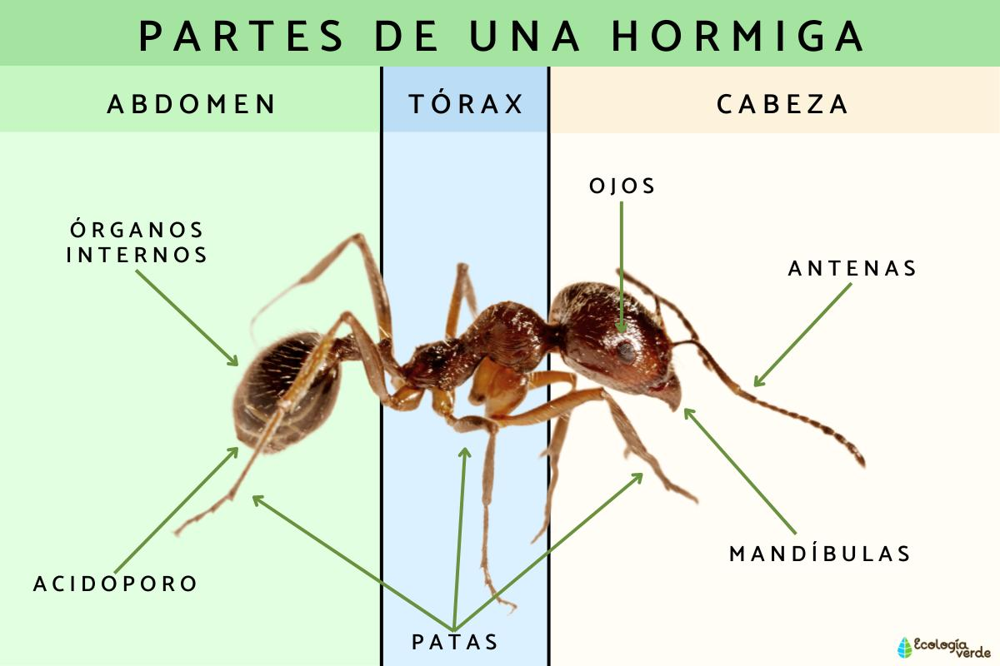
Su colonia y cómo se organizan
Una colonia suele dividirse en cuatro grupos:
La reina
La más grande de la colonia. Su única función es poner huevos para que la población crezca, y puede vivir varios años.
Las obreras
Hembras estériles que forman la mayor parte de la colonia. Buscan comida, cuidan de las larvas, limpian y amplían el nido.
Las soldado
Tienen la cabeza y la mandíbula más grandes. Defienden el hormiguero y transportan objetos pesados.
Los machos
Son alados y su único propósito es fecundar a la reina. Viven muy poco tiempo.
No existe un líder central que dé órdenes. Todos los individuos cooperan mediante reglas simples y comunicación, usando solo feromonas, tacto y vibraciones.
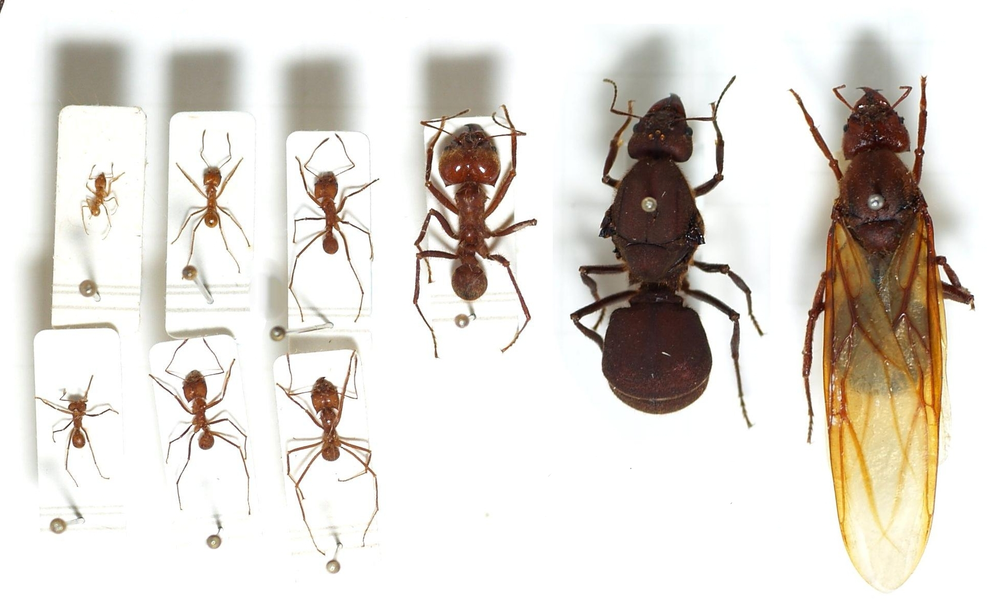
¿Qué comen y dónde viven?
¿Qué comen?
La mayoría come de todo un poco y solo algunas se especializan: unas cazan otros animales, otras prefieren semillas o el néctar de las flores, y otras recogen la melaza, un líquido dulce que producen insectos como los pulgones. Las cortadoras de hojas no se comen las hojas: las llevan al nido para alimentar un hongo que ellas mismas cultivan, y ese hongo es su comida principal.
No todas salen a buscar comida: solo entre el 10 y el 20 % de la colonia lo hace, y debe traer lo que necesita todo el nido. Los adultos necesitan sobre todo azúcares para tener energía, mientras que las larvas y la reina necesitan además proteínas para crecer y poner huevos.
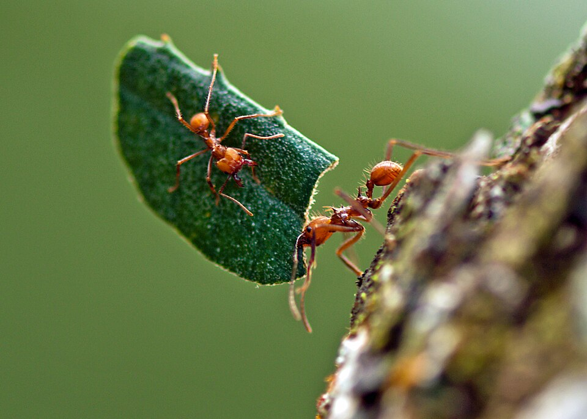
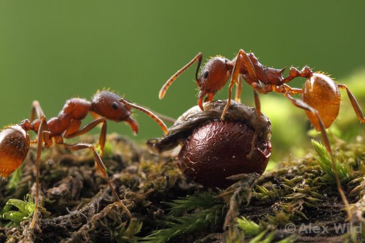
¿Dónde viven?
Viven en casi todos los ambientes de tierra firme, incluso en lugares que parecen difíciles. Sus nidos están en el suelo y algunas construyen montículos. Como así modifican el terreno donde viven, los científicos las llaman “ingenieras del ecosistema”.
Hay más hormigas en las zonas tropicales que en otras regiones. En los bosques abundan las que viven entre las hojas caídas, y en las zonas áridas, las que buscan comida sobre el suelo.
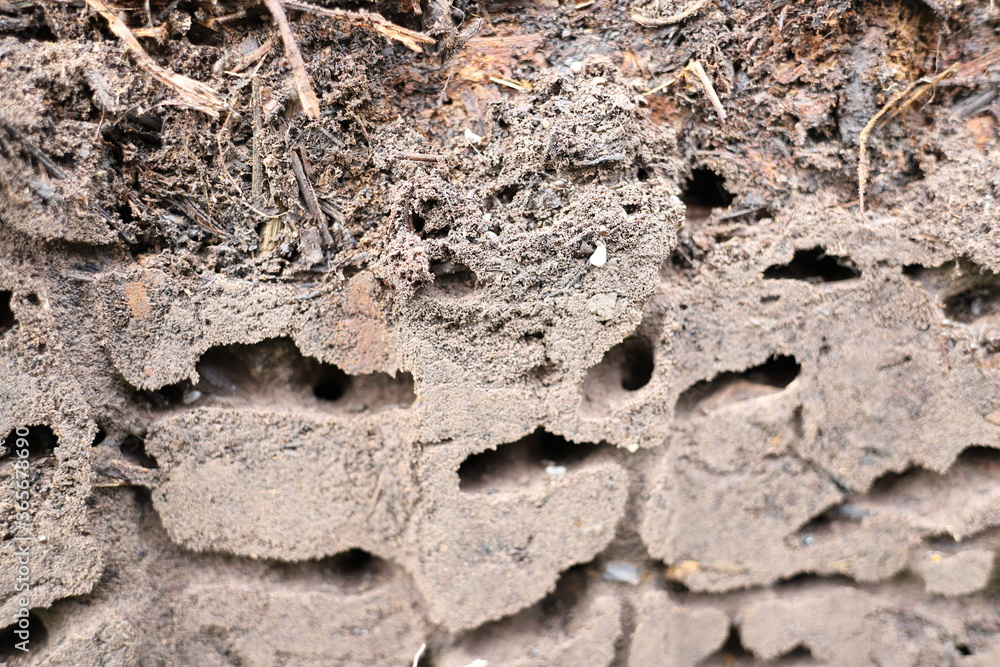
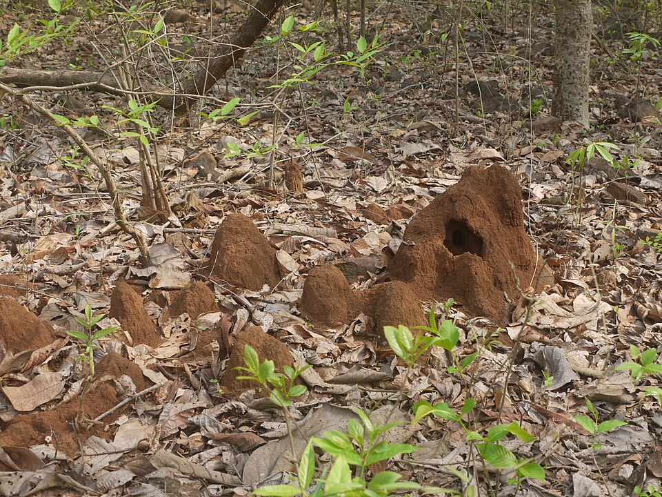
Curiosidades
No hay un jefe que reparta la comida
Las larvas avisan que tienen hambre a las obreras del nido, estas se lo transmiten a las que salen a buscar comida, y ellas salen por más.
Las larvas ayudan a digerir
Los adultos solo pueden tragar partículas sólidas muy pequeñas, así que las larvas digieren la comida y se la regresan en forma líquida.
Se guían por el olor
Al encontrar comida, una hormiga vuelve al nido dejando un rastro de olor que sus compañeras siguen y van reforzando.
Las “hormigas zombi”
En una selva de Tailandia, las hormigas infectadas por un hongo bajan de las copas de los árboles y muerden la vena de una hoja antes de morir. El hongo crece por su cabeza y suelta esporas que pueden infectar a otras.
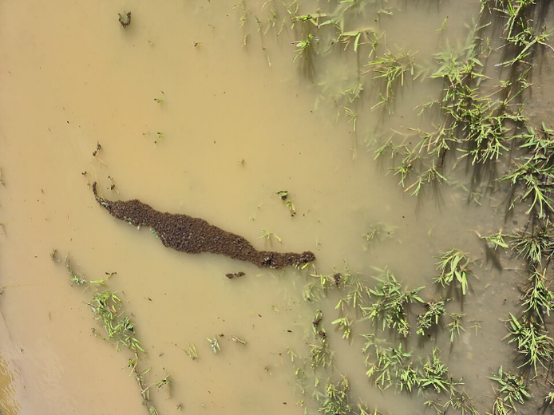
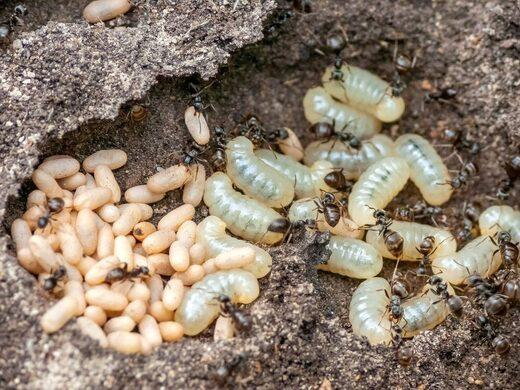
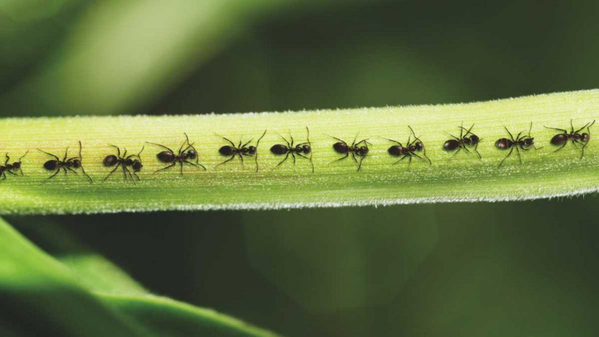
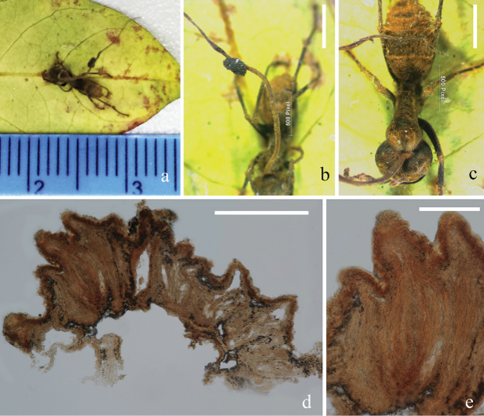
Las hormigas y la programación
En 1996, Marco Dorigo, Vittorio Maniezzo y Alberto Colorni crearon un método para computadoras inspirado en las colonias de hormigas. Se preguntaron cómo unos animales casi ciegos logran encontrar el camino más corto entre su nido y la comida.
En su método usan “hormigas artificiales”: pequeños programas que prueban rutas. Así resolvieron problemas como el problema del viajante (encontrar la ruta más corta para visitar varias ciudades). Hoy esta idea se conoce como optimización por colonias de hormigas (ACO).
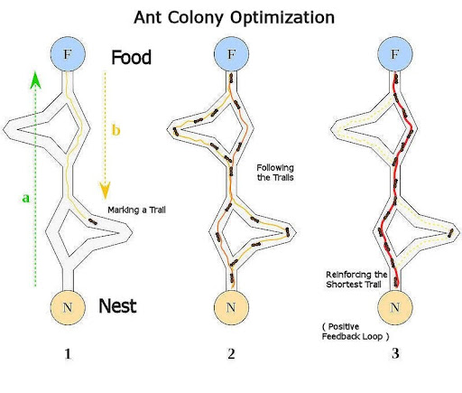
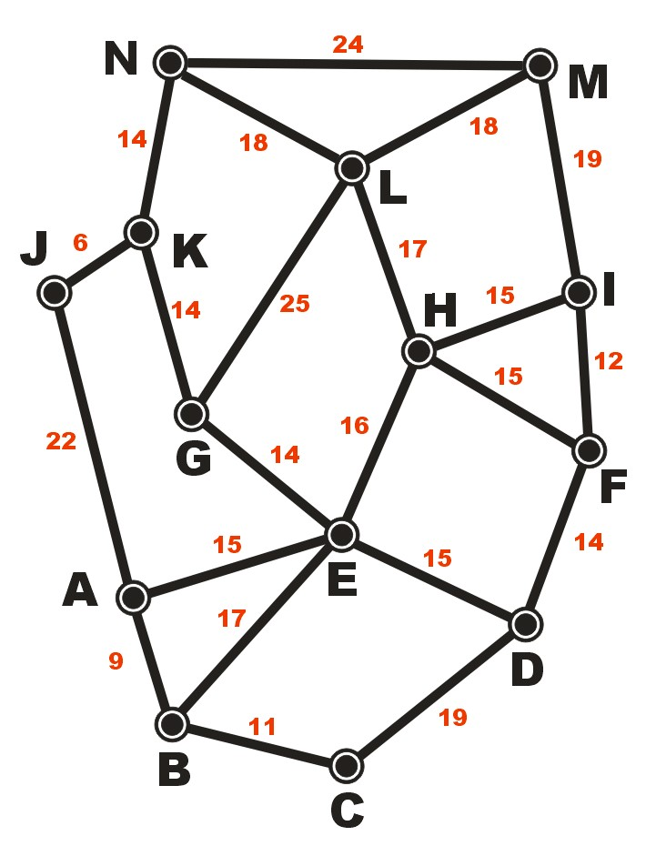
Nuestra observación
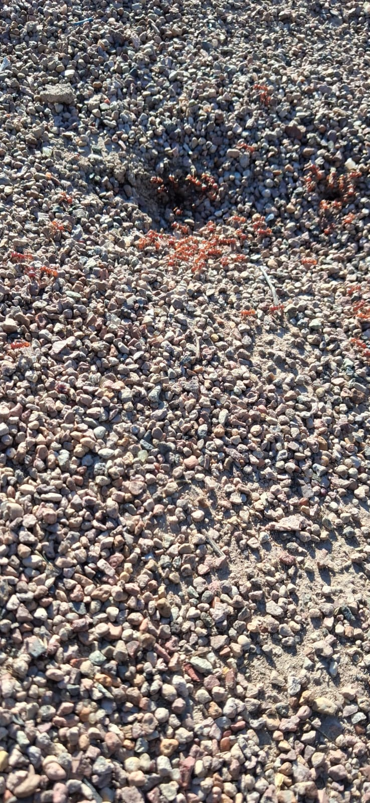
Dato de campo
- ¿Qué vimos?
- Qué vimos?: Hallamos un hormiguero durante la caminata. Al acercarnos, pudimos observar detalladamente la conducta y la organización social de las hormigas en su entorno.
- ¿Dónde?
- Instalaciones de la Universidad Tecnológica de Durango (UTD), específicamente en la zona posterior, en las inmediaciones de la cancha de fútbol.
- ¿A qué hora?
- Aproximadamente a las 9:00 a. m. (durante un receso o hora libre).
- ¿Qué hacían?
- Entraban y salían constantemente del nido cargando distintos objetos y alimento; incluso observamos a una llevando una flor hacia el interior del hormiguero.
Créditos de imágenes
| Archivo | Sitio | Autor |
|---|---|---|
| anatomia-hormiga.jpg | Ecología verde | Ecología verde |
| castas-colonia.jpg | wikipedia | GameKeeper |
| cortadoras-hojas.jpg | wikipedia | Kathy & sam from Beaverton OR, USA |
| hormiga-semilla.jpg | wikipedia | HERALDO DE ARAGÓN EDITORA, S.L. |
| interior-nido.jpg | wikipedia | Ibrahim Achiri |
| hormiguero.jpg | wikipedia | Dinesh Valke |
| sin-jefe.jpg | wikipedia | RCR del Ecuador |
| larvas.jpg | wikipedia | Nikita Alexandrov |
| rastro-olor.jpg | wikipedia | Mehmet Karatay. |
| hormiga-zombi.jpg | wikipedia | David P. Hughes y Maj-Britt Pontoppidan |
| esquema-aco.jpg | wikipedia | Johann Dréo (Nojhan). |
| problema-viajante.jpg | wikipedia | Johann Dréo (User:Nojhan) |
| foto-propia.jpg | Propia | Las Obreras |